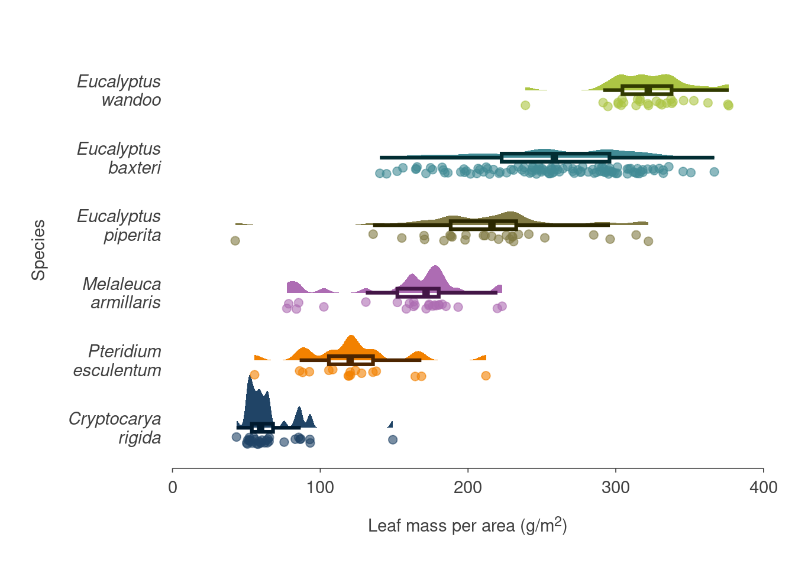
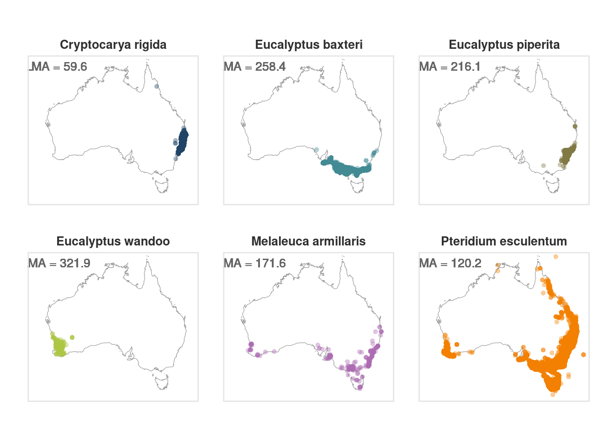

# remotes::install_github("traitecoevo/austraits")
library(tidyverse)
library(austraits)30 Analysis example: Using AusTraits with spatial data
This tutorial is based on this great tutorial by Dax Kellie and Shandiya Balasubramaniam from the ALA team.
Load austraits
most_recent <- austraits::get_versions()[["doi"]][1]
most_recent[1] "10.5281/zenodo.10156222"austraits <- austraits::load_austraits(doi = most_recent)Loading data from 'data/austraits/austraits-5.0.0.rds'Extract leaf mass per area (LMA) data
# You can use `lookup_trait()` to search for traits containing keywords
austraits::lookup_trait(austraits, "leaf_mass")[1] "leaf_mass_per_area" "leaf_mass_fraction"
[3] "leaf_mass_to_stem_mass_ratio"# Get trait data
leaf_mass <- austraits %>%
austraits::extract_trait("leaf_mass_per_area") %>%
purrr::pluck("traits") # Grab the traits table from the list of austraits tablesFilter to six species in the dataset
sample_names <- c("Cryptocarya rigida", "Pteridium esculentum",
"Eucalyptus baxteri", "Melaleuca armillaris",
"Eucalyptus wandoo", "Eucalyptus piperita")
leaf_mass_sample <- leaf_mass %>% dplyr::filter(taxon_name %in% sample_names)Plot raincloud plot of LMA for the six species
# install.packages(c("ggdist", "gghalves", "ggtext"))
# remotes::install_github("olihawkins/pilot")
ggplot(
data = leaf_mass_sample,
aes(x = taxon_name %>% stringr::str_wrap(10) %>% reorder(value),
y = value,
colour = taxon_name,
fill = taxon_name)
) +
ggdist::stat_halfeye(
adjust = .4,
width = .87,
colour = NA) +
gghalves::geom_half_point(
side = "l",
range_scale = .3,
alpha = .6,
size = 2.2) +
geom_boxplot(
aes(colour = taxon_name,
colour = after_scale(colorspace::darken(colour, .7))),
width = .12, # Adjust box width
fill = NA,
size = 1.1, # Size of box line
outlier.shape = NA # Remove outlier points
) +
coord_flip() +
labs(
x = "Species",
y = "Leaf mass per area (g/m<sup>2</sup>)") +
scale_y_continuous(
breaks = c(0, 100, 200, 300, 400),
labels = c(0, 100, 200, 300, 400),
limits = c(0, 400),
expand = c(0,0)) +
pilot::scale_color_pilot() +
pilot::scale_fill_pilot() +
pilot::theme_pilot(
grid = "",
axes = "b") +
theme(
legend.position = "none",
axis.title.x = ggtext::element_markdown(),
axis.text.y = element_text(face = "italic"))Warning: Duplicated aesthetics after name standardisation: colour
Plot the species distributions of these six species with ALA occurrence data (using galah)
# install.packages(c("galah", "sf", "ozmaps"))
library(galah)
Attaching package: 'galah'The following object is masked from 'package:dplyr':
descThe following object is masked from 'package:tidyr':
unnestThe following object is masked from 'package:stats':
filterlibrary(sf)Linking to GEOS 3.10.2, GDAL 3.4.1, PROJ 8.2.1; sf_use_s2() is TRUE# Configurate `galah` to use an email that has been registered with the ALA (https://auth.ala.org.au/userdetails/registration/createAccount)
galah_config(email = "sophie.yang917@gmail.com", verbose = FALSE)
# Download data
plants <- galah_call() %>%
galah_identify(sample_names) %>%
galah_apply_profile(ALA) %>%
atlas_occurrences()Retrying in 1 seconds.Retrying in 2 seconds.
Retrying in 4 seconds.
Retrying in 8 seconds.# Recategorise subspecies into species categories
plants <- plants %>%
drop_na(decimalLatitude, decimalLatitude) %>%
mutate(names = case_when(
str_detect(scientificName, "Eucalyptus wandoo") ~ "Eucalyptus wandoo",
str_detect(scientificName, "Pentameris airoides") ~ "Pentameris airoides",
str_detect(scientificName, "Melaleuca armillaris") ~ "Melaleuca armillaris",
str_detect(scientificName, "Pteridium esculentum") ~ "Pteridium esculentum",
.default = scientificName)
)
# Join median LMAs for each species to `plants` tibble
plants_lma <- leaf_mass_sample %>%
group_by(taxon_name) %>%
summarise(median_lma = median(value) %>% round(1)) %>%
right_join(plants, by = join_by(taxon_name == scientificName)) %>%
rename(scientificName = taxon_name) %>%
drop_na(median_lma) # Remove NAs for unmatched subspecies
# Australia map
aus <- ozmaps::ozmap_country %>%
st_transform(crs = st_crs(4326))
# Map points
ggplot() +
geom_sf(
data = aus,
colour = "grey60",
fill = NA) +
geom_point(
data = plants_lma,
aes(x = decimalLongitude,
y = decimalLatitude,
colour = names),
shape = 16,
alpha = 0.4) +
pilot::scale_color_pilot() +
pilot::theme_pilot() +
coord_sf(
xlim = c(110, 155),
ylim = c(-45, -10)) +
facet_wrap(~ names, ncol = 3) +
geom_text(
data = plants_lma,
mapping = aes(x = 116, y = -11,
label = glue::glue("LMA = {median_lma}"),
group = names),
colour = "grey40",
family = theme_get()$text$family, # use theme settings
size = 3.5,
lineheight = 0.92) +
theme(
legend.position = "none",
axis.title.x = element_blank(),
axis.title.y = element_blank(),
axis.text.x = element_blank(),
axis.text.y = element_blank(),
panel.border = element_rect(
linewidth = 1,
colour = "grey90",
fill = NA)
)